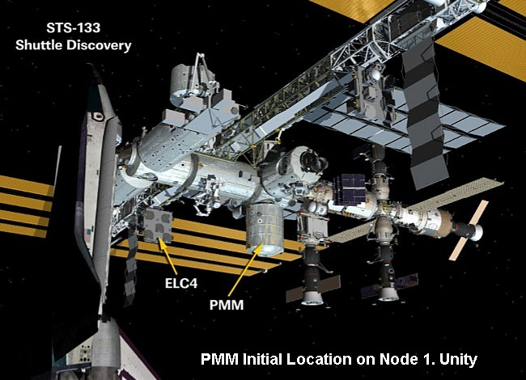

International Space Station (iss)
permanent multi purpose module [pmm]
The PMM connects to the forward facing port of Node 3. (Tranquility).

The PMM connects to the forward facing port of Node 3. (Tranquility).
The Permanent Multipurpose Module [PMM] is a modified Multi-Purpose Logistics Module [MPLM].
An MPLM is a pressurised cargo module that was carried in the U.S. Space Shuttle payload bay. The MPLM was temporarily attached to the station for unloading and then returned to Earth in the Shuttle. Three MPLMs were built, though only two were used to deliver cargo to the station.
MPLM-1, the first to be flown, was called Leonardo after Leonardo da Vinci. In 2011 it was modified to become the PMM and installed permanently on the station.
The following sections give an overview of MPLMs ▼ and the PMM. ▼
The Multi-Purpose Logistics Module [MPLM] is a pressurised cargo module built for NASA by the Italian Space Agency, Agenzia Spaziale Italiana (ASI), at the Alenia Aerospazio factory in Turin, Italy. This is main Italian contribution to the International Space Station. Italy is one of the partner nations in the ISS project.
The MPLM carries equipment, supplies, laboratory racks and experiments for the Station and is transported to the ISS in the Space Shuttle's cargo bay. During transit the MPLM is independent of the shuttle's cabin. There is no internal access from the shuttle to the module.
After the shuttle is docked to the Station the MPLM is lifted from the cargo bay using the shuttle's or the Station's robot arm. It is then connected to the nadir berthing port of the Station's Unity Module using the Common Berthing Mechanism, which locks it in place with an airtight seal.
The MPLM is then be unloaded directly into the Station through Unity and re-loaded with waste and items to be returned to Earth. At the end of the mission the MPLM is undocked from the Station and re-berthed in the shuttle's cargo bay for return to Earth. The MPLM is then re-conditioned and set up for its next mission.
Three MPLMs, They have been named after famous past Italians, were built to allow time for turn around.
Leonardo: After Leonardo da Vinci, an inventor, engineer and artist.
Raffaello: After Raffaello Sanzio, an artist renowned for human grandeur.
Donnatello: After Donato di Niccolo DI Betto Bardi, one of the greatest sculptors. Donnatello was kept as a spare and never flown to the station.
Length: 6.4 m
Diameter: 4.6 m
Mass: 4,082 kg
Capacity: 9,100 kg
Living Volume: 31 m3
Shape: Cylinder
Material: Aluminum
* Life support
* Fire detection / suppression
* Electrical distribution
* Computer
* Equipment racks: 16
(5 powered)
The following table lists all the MPLM missions.
| MPLM | Date | STS | Flight |
| 1. Leonardo | March 2001 | 102 | 5A.1 |
| August 2001 | 105 | 7A.1 | |
| June 2002 | 111 | UF-2 | |
| July 2006 | 121 | ULF1.1 | |
| November 2008 | 126 | ULF2 | |
| August 2009 | 128 | 17A | |
| April 2010 | 131 | 19A | |
| PMM | February 2011 | 133 | ULF5 |
| 2. Raffaello | April 2001 | 100 | 6A |
| December 2001 | 108 | UF-1 | |
| July 2005 | 114 | LF-1 | |
| July 2011 | 135 | ULF7 | |
| 3. Donnatello | Not used | - | - |
* U.S. Laboratory System Racks
* Re-supply Stowage Platforms (RSP)
* Re-supply Stowage Racks
* Human Research Facility (HRF) racks
* Science experiment racks
* EXPRESS Racks (EXpedite the PRocessing of Experiments to the Space Station).
The racks and RSPs contain hardware, equipment, food, supplies and spare parts.

The Multi-Purpose Logistics Module 1 [MPLM-1] called Leonardo was modified in 2011 to become the Permanent Multipurpose Module [PMM]. It is now a permanent component of the station.
A European proposal suggested equipping MPLM-3, called Donatello, with enhanced micrometeoroid and orbital debris protection and cooling systems and leaving it attached to the station after the U.S Space Shuttle fleet is retired. The MPLM would then be called a Permanent Multipurpose Module [PMM] and would house spare parts and supplies, allowing longer times between resupply.
The proposal was at first rejected by NASA but considered the possibility that the last Shuttle flight to the station could leave its MPLM permanently attached. This would have been MPLM-2 Raffaello's shuttle mission ULF7 in July 2011. In October 2009, it was decided that MPLM-1 Leonardo would be converted to a PMM instead of Raffaello.
The PMM (Leonardo) was delivered to the station by U.S. Shuttle STS-133 Discovery [Flight ULF5] on February 24, 2011. It was then transferred to the station using the Shuttle robotic arm and mated to the nadir (Earth facing) port of Node 1. (Unity).
On May 27, 2015, the PMM was relocated from Unity to the forward facing port of the Node 3. (Tranquility). This was done in order to allow Unity's nadir port to serve as a berthing port for resupply craft, which in turn frees up Harmony's zenith port for future U.S. Commercial Crew Development spacecraft.

After returning to Earth on April 20, 2010 at the end of the STS-131 mission, MPLM-1 (Leonardo) was moved to the Space Station Processing Facility (SSPF) at the Kennedy Space Center in Florida to undergo conversion into the PMM.
The MPLM basic structure was maintained with the following modifications.
* Removal of +Y grapple fixture (Flight Releasable Grapple Fixture, or FRGF)
* Removal of ROFU (Remotely Operated Fluid Umbilical) components
* Replacement of CBM seal
* Installation of new forward end cone MMOD shields
* Replacement of feed through seals
* Installation of visiting vehicle retro-reflectors
In addition, the Multi-layer insulation (MLI) blankets from the MPLM-3 (Donatello), which was never flown, were cannibalized for use on Leonardo. The blankets were removed and returned to Italy where they were reinforced with Nextel/Kevlar to provide better protection against micro-meteorites.
The mass of the PMM is 9,896 kg, compared to Leonardo's original mass of 4082 kg. Other dimensions remained the same as the MPLMs. (refer to the MPLM section above)